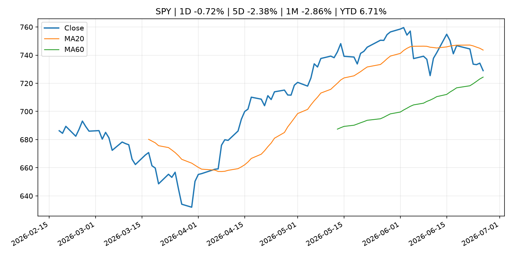
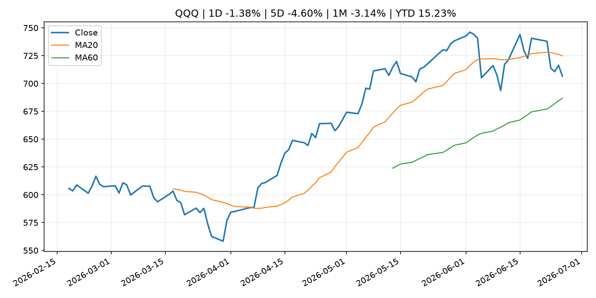
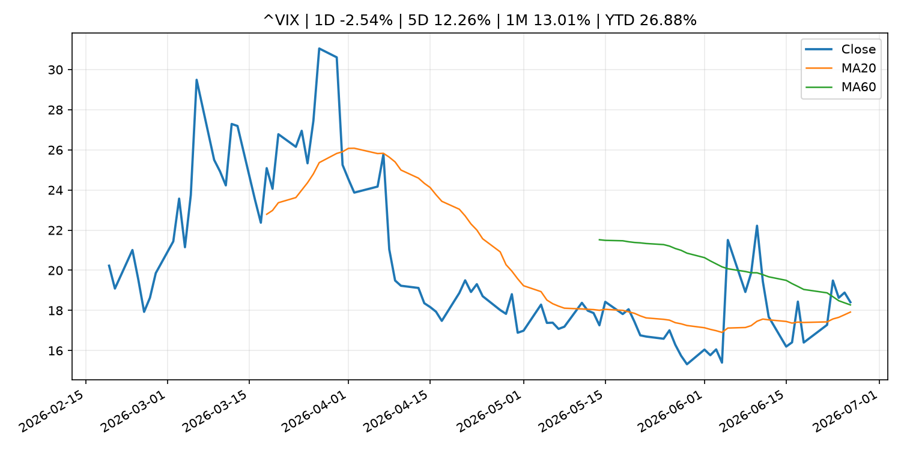
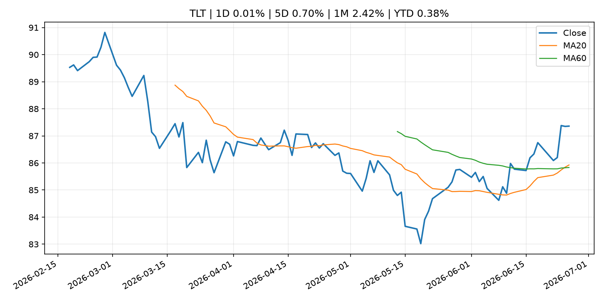
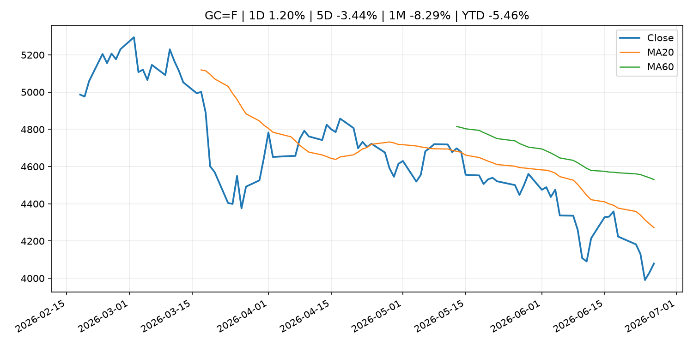
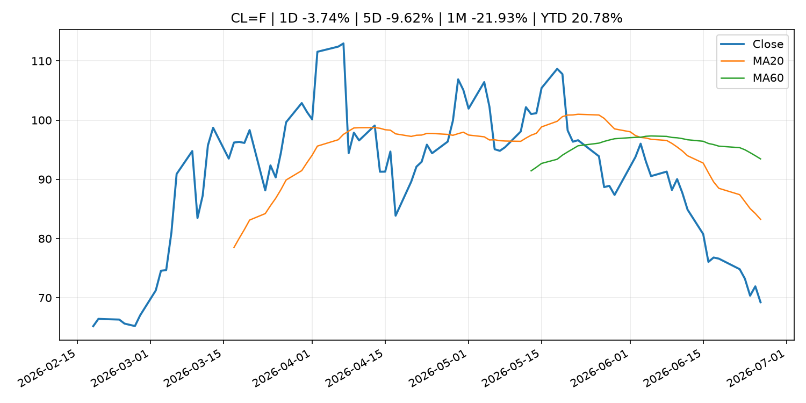
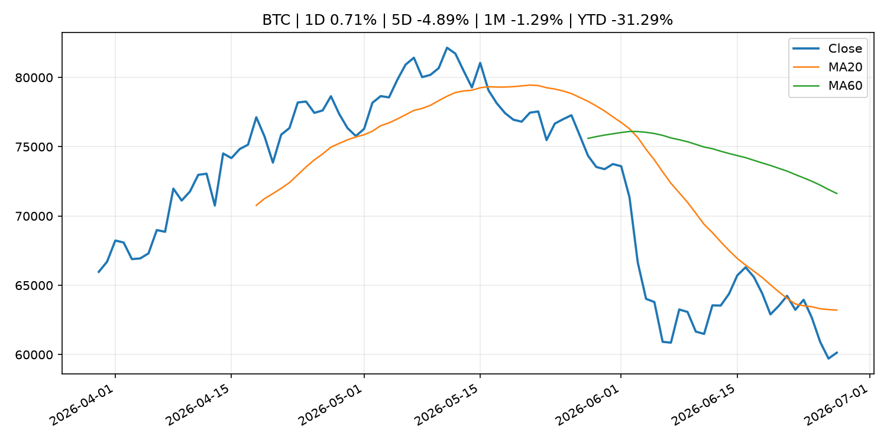
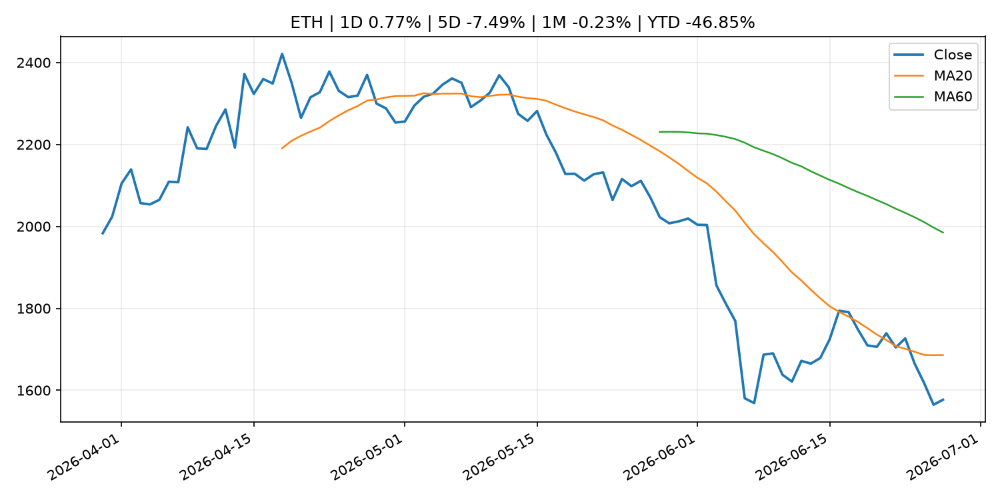

Global Macro Morning Briefing - 2026-06-28
Not financial advice / 非投资建议。
0. 今日总览
- 市场状态：unknown。市场信号不足，暂不判断明确状态。
- 今日三大主线：
- central_bank_decision: Minneapolis Fed President Neel Kashkari says he expects a rate hike this year
- regulation: SEC, CFTC Seek Public Comment on the Harmonization of Portfolio Margining Frameworks
- 一句话结论：今日晨报重点关注：央行决策会重定价利率、汇率、久期资产和风险资产。；监管变化会改变行业盈利预期和资产风险溢价。。跨资产方面，SPY 1D -0.72%；QQQ 1D -1.38%；^VIX 1D -2.54%；TLT 1D 0.01%；GC=F 1D 1.20%；CL=F 1D -3.74%；BTC 1D 0.71%；ETH 1D 0.77%；市场信号不足，暂不判断明确状态。政策、通胀、利率、美元、美债、能源和加密监管仍是主要观察线索。所有结论仅基于公开数据与短摘要整理，不构成投资建议。
1. 隔夜跨资产市场
- 美股：SPY 1D -0.72%，QQQ 1D -1.38%，整体趋势需结合 VIX 和利率确认。
- 美债/美元：TLT 1D 0.01%，美元指数 1D -0.07%，是判断折现率压力的核心线索。
- 黄金/原油：黄金 1D 1.20%，原油 1D -3.74%，用于观察避险、通胀和地缘风险。
- 加密：BTC 1D 0.71%，ETH 1D 0.77%，关注是否独立于纳指走出加密自身行情。
- 港股/A股：恒生 1D -1.76%，沪深300/上证 1D n/a，重点看中国政策预期与人民币线索。
- 风险观察：关注后续数据是否确认当前跨资产信号。
US_EQUITY
| symbol | latest close | 1D | 5D | 1M | YTD | trend |
|---|---|---|---|---|---|---|
| SPY | 728.99 | -0.72% | -2.38% | -2.86% | 6.71% | range_bound |
| QQQ | 706.52 | -1.38% | -4.60% | -3.14% | 15.23% | range_bound |
| DIA | 517.75 | -0.29% | 0.43% | 2.14% | 7.05% | uptrend |
| IWM | 299.83 | 0.31% | 1.43% | 3.26% | 20.52% | strong_uptrend |
| VTI | 363.98 | 0.09% | -0.49% | -1.48% | 8.23% | range_bound |
US_MACRO_MARKET
| symbol | latest close | 1D | 5D | 1M | YTD | trend |
|---|---|---|---|---|---|---|
| ^VIX | 18.41 | -2.54% | 12.26% | 13.01% | 26.88% | range_bound |
| DX-Y.NYB | 101.36 | -0.07% | 0.51% | 2.17% | 2.99% | uptrend |
| TLT | 87.36 | 0.01% | 0.70% | 2.42% | 0.38% | uptrend |
| IEF | 95.03 | 0.25% | 0.71% | 0.75% | -1.09% | range_bound |
COMMODITIES
| symbol | latest close | 1D | 5D | 1M | YTD | trend |
|---|---|---|---|---|---|---|
| GC=F | 4,078.70 | 1.20% | -3.44% | -8.29% | -5.46% | strong_downtrend |
| SI=F | 59.22 | 1.49% | -10.62% | -20.62% | -16.07% | strong_downtrend |
| CL=F | 69.23 | -3.74% | -9.62% | -21.93% | 20.78% | strong_downtrend |
| BZ=F | 71.99 | -4.34% | -9.84% | -23.65% | 18.50% | strong_downtrend |
| NG=F | 3.23 | -3.35% | -0.06% | 6.28% | -10.70% | uptrend |
| HG=F | 6.14 | 1.17% | -3.66% | -2.59% | 8.89% | range_bound |
HK_MARKET
| symbol | latest close | 1D | 5D | 1M | YTD | trend |
|---|---|---|---|---|---|---|
| ^HSI | 22,671.86 | -1.76% | -5.24% | -10.49% | -13.92% | strong_downtrend |
| 0700.HK | 411.80 | -2.28% | -6.45% | -5.20% | -33.90% | strong_downtrend |
| 9988.HK | 89.50 | -5.79% | -14.68% | -28.00% | -39.93% | strong_downtrend |
| 3690.HK | 64.25 | -2.80% | -10.52% | -17.31% | -38.58% | strong_downtrend |
| 1810.HK | 21.42 | -3.95% | -12.86% | -24.58% | -46.82% | strong_downtrend |
| 1211.HK | 72.65 | -4.47% | -10.14% | -19.90% | -26.43% | strong_downtrend |
CRYPTO
| symbol | latest close | 1D | 5D | 1M | YTD | trend |
|---|---|---|---|---|---|---|
| BTC | 60,137.85 | 0.71% | -4.89% | -1.29% | -31.29% | downtrend |
| ETH | 1,576.92 | 0.77% | -7.49% | -0.23% | -46.85% | downtrend |
| SOLANA | 70.94 | 4.90% | -2.09% | 11.83% | -43.03% | range_bound |
| BINANCECOIN | 558.14 | -0.29% | -4.37% | -2.40% | -35.34% | downtrend |
| RIPPLE | 1.05 | 0.96% | -6.43% | -4.02% | -42.80% | strong_downtrend |
2. 今日最重要的 10 条新闻
1. Minneapolis Fed President Neel Kashkari says he expects a rate hike this year
- 来源：CNBC Economy
- 时间：2026-06-26T16:04:42+00:00
- 地区：US
- 事件类型：central_bank_decision
- 重要性层级：Tier 1
- 一句话摘要：Kashkari said he sees a hike likely this year as the economy continues to feel the hit from spiking inflation.
- 为什么重要：央行决策会重定价利率、汇率、久期资产和风险资产。
- 可能影响：主要影响 DXY，方向为 positive，强度 high；通胀压力可能推高政策利率预期并支撑美元。
- 资产：DXY 方向：positive 强度：high 原因：通胀压力可能推高政策利率预期并支撑美元。
- 资产：TLT 方向：negative 强度：high 原因：通胀上行通常推升收益率、压低长债价格。
- 资产：QQQ 方向：negative 强度：high 原因：更高利率对成长股估值折现率不利。
- 资产：SPY 方向：mixed 强度：medium 原因：名义增长可能支撑收入，但更高利率压制估值。
- 资产：GC=F 方向：mixed 强度：medium 原因：通胀对黄金是支撑，但实际利率上行会形成压力。
- 资产：BTC 方向：negative 强度：high 原因：流动性收紧通常压制高 beta 加密资产。
- 原文链接：https://www.cnbc.com/2026/06/26/minneapolis-fed-president-neel-kashkari-says-he-expects-a-rate-hike-this-year.html
2. SEC, CFTC Seek Public Comment on the Harmonization of Portfolio Margining Frameworks
- 来源：SEC Press Releases
- 时间：2026-06-26T08:58:32-04:00
- 地区：US
- 事件类型：regulation
- 重要性层级：Tier 2
- 一句话摘要：The Securities and Exchange Commission and the Commodity Futures Trading Commission today issued a joint request for public comment on potential approaches to further harmonize regulatory frameworks applicable to portfolio margining across securities,…
- 为什么重要：监管变化会改变行业盈利预期和资产风险溢价。
- 可能影响：主要影响 BTC，方向为 mixed，强度 high；加密监管或 ETF 进展会改变 BTC 的资金流和风险溢价。
- 资产：BTC 方向：mixed 强度：high 原因：加密监管或 ETF 进展会改变 BTC 的资金流和风险溢价。
- 资产：ETH 方向：mixed 强度：high 原因：监管框架会影响 ETH 产品化和机构参与度。
- 资产：COIN 方向：mixed 强度：medium 原因：监管清晰度和执法风险会影响交易平台估值。
- 资产：crypto market 方向：mixed 强度：high 原因：信息影响整个加密市场结构，但方向取决于细节。
- 原文链接：https://www.sec.gov/newsroom/press-releases/2026-59-sec-cftc-seek-public-comment-harmonization-portfolio-margining-frameworks
3. Isabel Schnabel: Is inflation back?
- 来源：ECB Press Releases
- 时间：2026-06-27T15:45:00+02:00
- 地区：EU
- 事件类型：other
- 重要性层级：Tier 3
- 一句话摘要：Isabel Schnabel: Is inflation back?
- 为什么重要：这条信息暂未匹配到重大宏观、政策或市场事件，更适合作为背景跟踪。
- 可能影响：主要影响 DXY，方向为 positive，强度 high；通胀压力可能推高政策利率预期并支撑美元。
- 资产：DXY 方向：positive 强度：high 原因：通胀压力可能推高政策利率预期并支撑美元。
- 资产：TLT 方向：negative 强度：high 原因：通胀上行通常推升收益率、压低长债价格。
- 资产：QQQ 方向：negative 强度：high 原因：更高利率对成长股估值折现率不利。
- 资产：SPY 方向：mixed 强度：medium 原因：名义增长可能支撑收入，但更高利率压制估值。
- 资产：GC=F 方向：mixed 强度：medium 原因：通胀对黄金是支撑，但实际利率上行会形成压力。
- 资产：BTC 方向：mixed 强度：medium 原因：抗通胀叙事和流动性收紧可能相互抵消。
- 原文链接：https://www.ecb.europa.eu//press/key/date/2026/html/ecb.sp260627~3807c2766e.en.pdf
4. Why investors may want to prioritize bond markets outside the U.S.
- 来源：CNBC Economy
- 时间：2026-06-27T15:00:01+00:00
- 地区：US
- 事件类型：other
- 重要性层级：Tier 3
- 一句话摘要：Allspring Global Investments is pushing clients toward countries with central banks that are raising interest rates or have different inflation dynamics.
- 为什么重要：这条信息暂未匹配到重大宏观、政策或市场事件，更适合作为背景跟踪。
- 可能影响：主要影响 DXY，方向为 positive，强度 high；通胀压力可能推高政策利率预期并支撑美元。
- 资产：DXY 方向：positive 强度：high 原因：通胀压力可能推高政策利率预期并支撑美元。
- 资产：TLT 方向：negative 强度：high 原因：通胀上行通常推升收益率、压低长债价格。
- 资产：QQQ 方向：negative 强度：high 原因：更高利率对成长股估值折现率不利。
- 资产：SPY 方向：mixed 强度：medium 原因：名义增长可能支撑收入，但更高利率压制估值。
- 资产：GC=F 方向：mixed 强度：medium 原因：通胀对黄金是支撑，但实际利率上行会形成压力。
- 资产：BTC 方向：mixed 强度：medium 原因：抗通胀叙事和流动性收紧可能相互抵消。
- 原文链接：https://www.cnbc.com/2026/06/27/inflation-as-major-reason-to-invest-in-global-bond-markets.html
3. 政策与央行观察
1. Minneapolis Fed President Neel Kashkari says he expects a rate hike this year
- 来源：CNBC Economy
- 时间：2026-06-26T16:04:42+00:00
- 地区：US
- 事件类型：central_bank_decision
- 重要性层级：Tier 1
- 一句话摘要：Kashkari said he sees a hike likely this year as the economy continues to feel the hit from spiking inflation.
- 为什么重要：央行决策会重定价利率、汇率、久期资产和风险资产。
- 可能影响：主要影响 DXY，方向为 positive，强度 high；通胀压力可能推高政策利率预期并支撑美元。
- 资产：DXY 方向：positive 强度：high 原因：通胀压力可能推高政策利率预期并支撑美元。
- 资产：TLT 方向：negative 强度：high 原因：通胀上行通常推升收益率、压低长债价格。
- 资产：QQQ 方向：negative 强度：high 原因：更高利率对成长股估值折现率不利。
- 资产：SPY 方向：mixed 强度：medium 原因：名义增长可能支撑收入，但更高利率压制估值。
- 资产：GC=F 方向：mixed 强度：medium 原因：通胀对黄金是支撑，但实际利率上行会形成压力。
- 资产：BTC 方向：negative 强度：high 原因：流动性收紧通常压制高 beta 加密资产。
- 原文链接：https://www.cnbc.com/2026/06/26/minneapolis-fed-president-neel-kashkari-says-he-expects-a-rate-hike-this-year.html
2. SEC, CFTC Seek Public Comment on the Harmonization of Portfolio Margining Frameworks
- 来源：SEC Press Releases
- 时间：2026-06-26T08:58:32-04:00
- 地区：US
- 事件类型：regulation
- 重要性层级：Tier 2
- 一句话摘要：The Securities and Exchange Commission and the Commodity Futures Trading Commission today issued a joint request for public comment on potential approaches to further harmonize regulatory frameworks applicable to portfolio margining across securities,…
- 为什么重要：监管变化会改变行业盈利预期和资产风险溢价。
- 可能影响：主要影响 BTC，方向为 mixed，强度 high；加密监管或 ETF 进展会改变 BTC 的资金流和风险溢价。
- 资产：BTC 方向：mixed 强度：high 原因：加密监管或 ETF 进展会改变 BTC 的资金流和风险溢价。
- 资产：ETH 方向：mixed 强度：high 原因：监管框架会影响 ETH 产品化和机构参与度。
- 资产：COIN 方向：mixed 强度：medium 原因：监管清晰度和执法风险会影响交易平台估值。
- 资产：crypto market 方向：mixed 强度：high 原因：信息影响整个加密市场结构，但方向取决于细节。
- 原文链接：https://www.sec.gov/newsroom/press-releases/2026-59-sec-cftc-seek-public-comment-harmonization-portfolio-margining-frameworks
4. 市场异动与图表
- SPY 下跌 -0.72%
- QQQ 下跌 -1.38%
- Gold 上涨 1.20%
- Oil 下跌 -3.74%
SPY

QQQ

^VIX

TLT

GC=F

CL=F

BTC

ETH

^HSI

5. 华尔街与机构公开观点
- 暂无可靠公开观点。
6. 今日重点关注
- 经济数据：经济数据：暂无可靠公开日历数据；如配置经济日历源后可自动填充。
- 央行讲话：央行讲话：暂无可靠公开日历数据；重点跟踪 Fed、ECB、BoJ、PBOC 官网 RSS。
- 财报：财报：暂无可靠数据。
- 政策事件：政策事件：暂无可靠数据。
- 风险提醒：风险提醒：关注数据源失败项、突发地缘风险、利率和美元的二阶反应。
7. 英文金融表达与宏观概念
- inflation expectations：通胀预期，指家庭、企业或市场对未来通胀的预估。 例句：Inflation expectations can shape wage bargaining and bond yields.
- real yield：实际收益率，名义利率扣除通胀预期后的收益率。 例句：Gold often reacts more to real yields than nominal yields.
- terminal rate：终端利率，市场预期本轮加息周期的最高政策利率。 例句：A higher terminal rate can pressure growth stocks.
- risk-off：避险模式，资金偏向美元、国债、黄金等防御资产。 例句：A geopolitical shock can push markets into risk-off mode.
- market structure：市场结构，指交易、托管、清算、ETF、监管等制度安排。 例句：Crypto market structure rules can affect institutional participation.
- soft landing：软着陆，指通胀回落而经济避免明显衰退。 例句：Markets often rally when data support a soft landing.
8. 背景材料
- SpaceX to join the Nasdaq-100 in a fast-tracked process that will drive huge ETF buying demand（CNBC Economy，other）：Adding SpaceX this quickly would make the Elon Musk company one of the first beneficiaries of Nasdaq's recently adopted fast-track inclusion framework.
- How to work in retirement without seeing your Social Security checks slashed（MarketWatch Top Stories，other）：Claiming benefits before full retirement age while keeping a job can trigger unexpected withholdings — but the money isn’t lost forever.
- Social Security says I was overpaid for 7 years. I believe it’s mistaken. Can they cut my benefits?（MarketWatch Top Stories，other）：“They say I made $43,000 in 2019, but I actually made that in 2020.”
- Germany is considering raising its retirement age to 70. Could the U.S. follow?（MarketWatch Top Stories，other）：Germany may gradually raise its retirement age to 70 by 2092 — but such a move would fix only part of Social Security’s funding gap.
- Why a selloff in gold and silver is dragging bitcoin down（CoinDesk，other）：Why a selloff in gold and silver is dragging bitcoin down
- Why investors may want to prioritize bond markets outside the U.S.（CNBC Economy，other）：Allspring Global Investments is pushing clients toward countries with central banks that are raising interest rates or have different inflation dynamics.
- Tether putting $23 billion gold stockpile to work with bullion-backed loans（CoinDesk，other）：Tether putting $23 billion gold stockpile to work with bullion-backed loans
- Coinbase and OKX try to lure in Binance’s EU users after it failed to secure a MiCA license（CoinDesk，other）：Coinbase and OKX try to lure in Binance’s EU users after it failed to secure a MiCA license
- Isabel Schnabel: Is inflation back?（ECB Press Releases，other）：Isabel Schnabel: Is inflation back?
- Strategy's valuation has fallen below the value of its bitcoin holdings（CoinDesk，other）：Strategy's valuation has fallen below the value of its bitcoin holdings
- Ripple CEO stays bullish on bitcoin but says Saylor's strategy has hurt crypto（CoinDesk，other）：Ripple CEO stays bullish on bitcoin but says Saylor's strategy has hurt crypto
- Aave, Solana ecosystem tokens lead crypto rebound as bitcoin steadies near $60,000（CoinDesk，other）：Aave, Solana ecosystem tokens lead crypto rebound as bitcoin steadies near $60,000
- Anti-trafficking group says Clarity Act's Section 604 could weaken accountability（CoinDesk，other）：Anti-trafficking group says Clarity Act's Section 604 could weaken accountability
- Securitize expects to raise $400 million as tokenization firm nears public debut（CoinDesk，other）：Securitize expects to raise $400 million as tokenization firm nears public debut
- Wall Street's IPO revival hasn't reached dot-com euphoria levels, Goldman Sachs says（CoinDesk，other）：Wall Street's IPO revival hasn't reached dot-com euphoria levels, Goldman Sachs says
- With crypto ending the first half in the red, bitcoin's solace is it beat Strategy（CoinDesk，other）：With crypto ending the first half in the red, bitcoin's solace is it beat Strategy
- Bitcoin bounces from $58,000 as derivatives signal more pain in the pipeline（CoinDesk，other）：Bitcoin bounces from $58,000 as derivatives signal more pain in the pipeline
- Binance tells EU users it will no longer provide services after failing to secure MiCA license（CoinDesk，other）：Binance tells EU users it will no longer provide services after failing to secure MiCA license
- Ethereum treasury firm Sharplink buys ether for the first time in eight months（CoinDesk，other）：Ethereum treasury firm Sharplink buys ether for the first time in eight months
- Grant Cardone says he will keep buying bitcoin using real estate cash flows（CoinDesk，other）：Grant Cardone says he will keep buying bitcoin using real estate cash flows
9. 数据源、失败项与免责声明
- 采集时间：2026-06-27T23:01:57
- 数据源：公开 RSS、Yahoo Finance、CoinGecko、AKShare、FRED、SEC data.sec.gov，以及用户自有 inputs/reports 文件。
- 合规说明：不绕过 WSJ、Bloomberg、FT、Reuters 等付费墙；对付费媒体只使用公开 RSS 标题、摘要、链接和发布时间。
- 免责声明：Not financial advice / 非投资建议。本项目仅供个人学习、研究和信息整理，不构成投资建议、交易建议或任何收益承诺。
- 失败或跳过的数据源：
- crypto data failed coin=dogecoin
- China market data failed symbol=上证指数: empty dataframe
- China market data failed symbol=深证成指: empty dataframe
- China market data failed symbol=创业板指: empty dataframe
- China market data failed symbol=沪深300: empty dataframe
- China market data failed symbol=中证500: empty dataframe
- China market data failed symbol=科创50: empty dataframe
- FRED_API_KEY not set; skipping FRED macro series
- SEC failed cik=0000320193
- SEC failed cik=0000789019
- SEC failed cik=0001045810
- SEC failed cik=0001318605
- SEC failed cik=0001577552